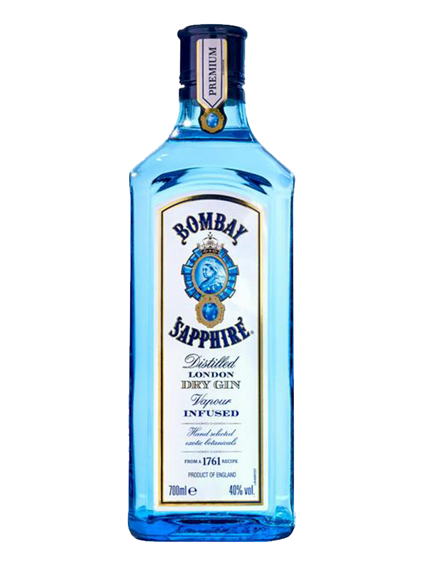

|  | Gin – destylowany napój alkoholowy, którego charakterystyczny smak pochodzi od jagód jałowca pospolitego. Po destylacji powinien zawierać 35% – 40% alkoholu. Dry gin i London dry gin to jego dwa najpopularniejsze rodzaje. Zazwyczaj jest mieszany z innymi napojami, by złagodzić cierpki i gorzki smak. Jest jednym z najbardziej popularnych napojów alkoholowych używanych do drinków. Uznawany za alkohol dający się mieszać ze wszystkim, najczęściej z tonikiem (gin z tonikiem), ew. sokiem (napojem) cytrynowym lub pomarańczowym (tzw. Gin Collins). Natomiast gin wymieszany z wermutem daje w efekcie martini. |
Gin powstał w XVII w. w dawnych Niderlandach (dzisiaj: Holandia i część Belgii) pod nazwą Jenever (Genever / Genièvre). Popularność zyskał zaś w Anglii, pod skróconą nazwą Gin, dokąd dotarł głównie za sprawą Wilhelma III[3]. Jest znakomitym aperitifem. Początkowo, z racji bardzo liberalnych przepisów dotyczących wytwarzania, jednoznacznie kojarzony jako najtańszy alkohol dla najniższych sfer. Renomę zyskał pod koniec XVIII w. Gin z tonikiem uważany jest za napój, który pozwolił Brytyjczykom zająć i utrzymać Indie. Wszystko dzięki chininie zawartej w toniku, która chroniła żołnierzy przed malarią.